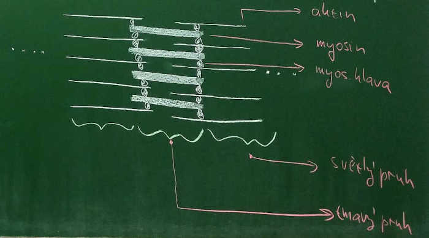
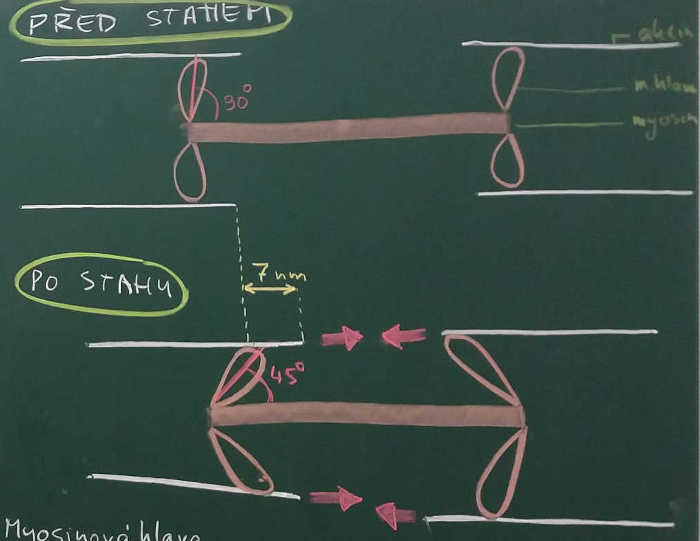
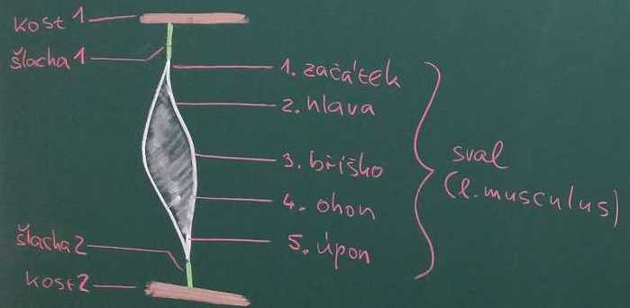
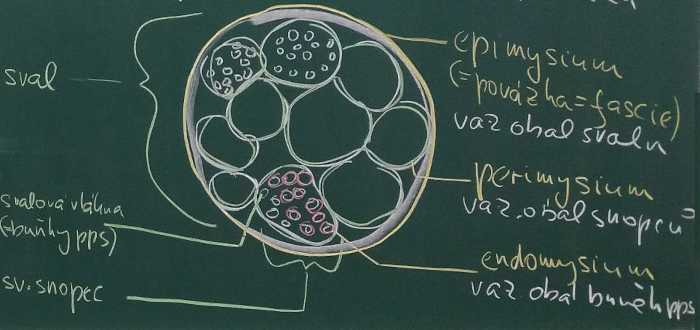

zatím zpracována videa 01, 02 a 03; doporučuji dívat se na videa alespoň při rychlosti x1.5
Obecná myologie
- myologie je věda o svalech (ř. mys = sval, ř. logos = věda)
Příčně pruhované svaly
- jinak také kosterní svaly, protože většina je uplá ke kostem
- pps jazyka, jícnu - nejsou upnuty na kostru
- vzorek pod mikroskopem má příčné pruhy
buňky
- označují se svalová vlákna
- tvar válce
- délka až 30cm
- průměr až 0,1mm
- více jader
- uvnitř až několik tisíc myofibril, které zabírají až 80% objemu
myofibrila
- složena z do sebe zasunutých vláken, které jsou bílkoviny a jsou dvou typů:
- tenčí aktin
- tlustší myosin

kontrakce (stah)
- objeven v polovině 20. století
- způsobena zasouváním aktinu a myosinu mezi sebe, aniž by se zkracovaly
- při kontrakci se dodává energie štěpením ATP
- je potřeba přítomnost vápenatých kationtů Ca2+
- je potřeba inervace (nervové zásobení)
- motorická jednotka = počet buněk ovládaných jedním neuronem
- velká
- několik stovek buněk
- svaly zad
- malá
- několik desítek buněk
- svaly prstů ruky

myosinová hlava
- "přehmátnutí"
- posun aktinu o 7nm
- připojení na aktin
- ohyb na 45˚
- odpojení od aktinu
- narovnání na 90˚
- k maximálnímu zkrácení je potřeba asi 50 "přehmátnutí"
části

- začátek
- okraj svalu připojený šlachou ke kosti, která je v těle výše (craniálněji) a je méně pohyblivá
- hlava
- bříško
- nejširší prostřední část svalu
- ohon
- úpon
- okraj svalu připojený šlachou ke kosti, která je v těle níže (caudálněji) a je více pohyblivá
šlacha
- l. tendo
- pevné vazivo připojující pps ke kosti
- provázkový tvar u většiny svalů
- plochý tvar - aponeuróza
- u plochých svalů (např. bránice)
- světlá (malé cévní zásobení)
- velmi pevná
- unese asi 10kg na mm2 průřezu
příčný řez
